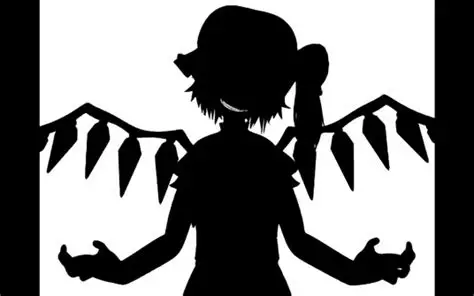
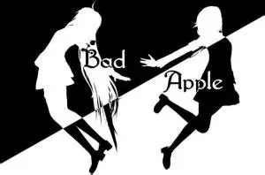
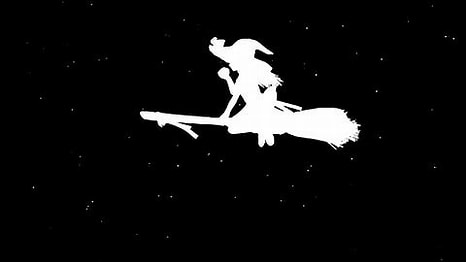
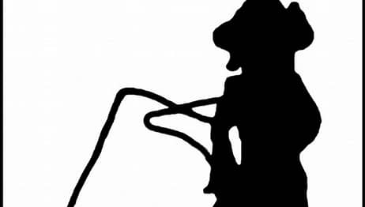
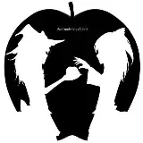

Bad Apple!!_百度百科
《Bad Apple!!》是由nomico演唱的同人歌曲，由Haruka作词，Masayoshi
Minoshima编曲，改编自上海爱丽丝幻乐团成员ZUN为弹幕游戏《东方幻想乡
～ Lotus Land Story.》创作的原声音乐《Bad Apple!!》

Bad Apple!! feat.nomico - 萌娘百科
2025年9月4日 · Bad Apple!! feat.nomico是由同人社團Alstroemeria Records
所創作的東方Project原曲改編歌曲，收錄於在第四回博麗神社例大祭發售的
《Lovelight》專輯中。
bad apple - 搜狗百科
2024年9月28日 · 《bad apple》是一首日语原声歌曲，由nomico演唱，原曲出自
东方幻想乡的3面道中曲。该歌曲在nico上获得了广泛的好评和走红，被称为神作...

Bad Apple!! - 中文音MAD维基 OtomadWiki
2020年12月27日 · Bad Apple!! 是由同人社团 Alstroemeria Records 于 2007 年基于
Bad Apple!! 改编的一首歌曲。 在 2009 年以该曲为 BGM ，由 あにら制作的《 【东方】
Bad Apple!! ＰＶ【影絵】 》迅速走红，一举成为 Niconico上播放量最高的视频。
Bad Apple!! - THBWiki · 专业性的东方Project维基百科
2025年9月8日 · 其他资料 乐理资讯 分析考据 Bad Apple!! Bad Apple!! Bad Apple 烂苹果。 俗语中有“近墨者黑”的
含义。 从“馆”中涌现的魔力激起了众多恶灵的活动。 害群之马。 散布坏影响的人；（带坏好人的）坏家伙；害群之马。
可能指有人将恶灵放出导致这扰乱了东之国的秩序。 黄泉国？ 三面的场景为“幽冥”，似乎与黄泉国有联系？
Bad Apple!! - Wikiwand
2022年1月24日 · 《Bad Apple!!》原为东方Project在PC-98平台发布的旧作《东方幻想乡 ～ Lotus
Land Story.》的三面道中背景音乐，知名于根据该曲改编的《Bad Apple!! feat.nomico》和基于 …
【4K/90fps/全彩色】Bad Apple,你从未见过的清晰流畅
bilibili · ExhYZ
已浏览 535.1万 次 · 2020年5月15日
【4K/144fps】Bad Apple 2,你从未见过的清晰流畅
bilibili · ExhYZ
已浏览 39.4万 次 · 2020年5月11日
【4K 60FPS】(全站最清晰画质/音频修复)Bad
apple！！！坏苹果！！！
bilibili · 蒴奈
已浏览 587.6万次 · 2022年2月9日

Bad Apple 原版
sohu · 小狐狸229224828
2014年8月30日
Bad Apple!!完整版本-中日双语字幕 ＆ 出场角色介绍_哔哩哔哩
2024年11月28日 · 完整版再次重现，【Bad Apple!!】完整
版本-中日双语字幕·出场角色介绍（重制），这是一个超严
肃的bad apple教学视频！！！，【中日双语字幕填坑】
作者：植松菊苗 查看次数 10,725
BAD APPLE！！完整版带字幕和人物说明_哔哩哔哩_bilibili

2022年6月11日 · 把上一个视频加入了人物称号名字说明
和中日文歌词字幕, 视频播放量 83767、弹幕量 207、点赞
数 3909、投硬币枚数 773、收藏人数 4178、转发人数101
作者：只是一般路过的小石 查看次数 83,850
【东方鉴赏系列特别篇】你真的看懂Bad Apple了吗？
2023年8月16日 · Bad Apple封面 伴随着动感的鼓点，首先摇摇晃晃地出场的第一
个角色是乐园的巫女——博丽灵梦，镜头先是拉远，再是拉近，对她拿起苹果做出
要咬一口的动作进行了特写，但她并没有咬下去，而是转手把苹果仍上天。

Bad Apple!!（坏苹果！！） - のみこ - 单曲 - 网易云音乐
歌曲名《Bad Apple!!》，别名《坏苹果！！》，由 のみこ 演唱，收录于《Lovelight》
专辑中。《Bad Apple!!》下载，《Bad Apple!!》在线试听，更多 …
Bad Apple!! (坏苹果) [全版本收录] - 歌单 - 网易云音乐
2018年5月6日 · Becausesheexists创建的歌单《Bad Apple!! (坏苹果) [全版本收
录]》，标签：日语、电子，简介：第一首为原曲。更多相关热门精选歌单推荐 …
🔍 bad apple下载 🔍 bad apple歌词
🔍 bad apple漫画 🔍 bad apple病毒
🔍 bad apple韩漫 🔍 bad apple罗马音
🔍 bad apple时什么梗 🔍 bad apple视频下载
为回应符合本地法律要求的通知，部分搜索结果未予显示。有关详细信息，请参阅 此处。